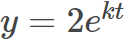
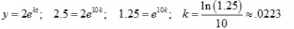

Volumes of a solid
Volumes of solids are also problems where integration techniques are used. We use it when there is a constant revolving area in order for the integral to measure the inside of thesolid. The revolving plane makes a solid along an interval and you can plug into an integral and solve
Ex:
Ans:
We already have  (Millions). We can begin counting at year 2000.(0,2)
Now let’s use the other (t, y) data point (10, 2.5) to solve for k(population)

n